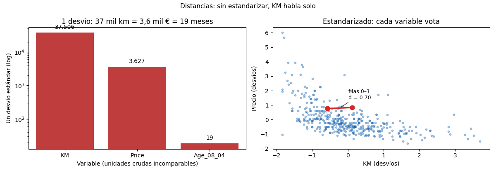

Bloque F · Clustering · Lección 0028 · mar 27 oct
Distancias: qué tan parecido es un auto a otro
Win de hoy: medir parecido entre las filas 0 y 1 con 3 distancias (euclídea 25.952, Manhattan 26.201, coseno 0,061) y ver por qué KM habla solo sin estandarizar.
1 · Clustering: agrupar sin target (pero con regla)
Clustering agrupa sin target: nadie dice cuántos grupos hay ni quién va en cuál. La única regla del juego es la distancia: definir “parecido” con un número. Todo el bloque cuelga de esta definición: cambiá la distancia y cambian los grupos.
El ejemplo: filas 0 y 1 (misma edad, 23 meses; KM 46.986 vs 72.937; precio 13.500 vs 13.750).
2 · Euclídea: Pitágoras (KM aporta 100,0 %)
Raíz de la suma de cuadrados: √(25.951² + 250² + 0²) = 25.952. El KM aporta el 100,0 %: los 250 € de diferencia (plata real) desaparecen al lado de los kilómetros. Una variable en decenas de miles aplasta a las demás: la distancia “mide KM con ruido”.
3 · Manhattan y coseno (otras reglas)
- Manhattan = |25.951| + |250| + 0 = 26.201: como caminar cuadras, sin diagonales. Menos sensible a una dimensión disparada (no eleva al cuadrado).
- Coseno = 1 − similaridad de ángulo = 0,061: mira dirección, no magnitud. Reina en textos (documentos largos vs cortos del mismo tema) y alta dimensión.
4 · Estandarizar: un voto por variable
Un desvío vale 37.506 km = 3.627 € = 18,6 meses: comparar crudo es sumar peras con tornillos. Estandarizando, la distancia 0–1 queda d = 0,70 y cada variable vota en desvíos (regla 0008, Bloque B). Sin este paso, todo clustering Toyota sería “clustering de KM”.
Xs = (X - X.mean(axis=0)) / X.std(axis=0) # siempre antes de clusterizar5 · Figura: escalas y segmento

Regenerar la figura (mismo resultado versionado en assets/img/toyota/):
python scripts/make_figures.py --only distancias-similaridad6 · Quiz (auto-chequeo inmediato)
7 · Fuente primaria y cierre
Para profundizar (1 fuente): Tan, Steinbach & Kumar, Introduction to Data Mining — capítulo de similaridad y distancias (dmbook, también en RESOURCES.md del curso).
Orden Bloque F: seguí en la lección 0029 (mié 28: K-Means con estas distancias).
¿Algo no quedó claro? Preguntame al agente: qué distancia para tu dato, euclídea vs Manhattan, o cuándo el coseno gana. Esa pregunta vale más que releer.